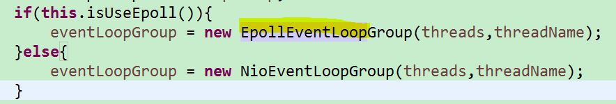
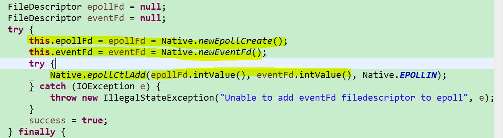
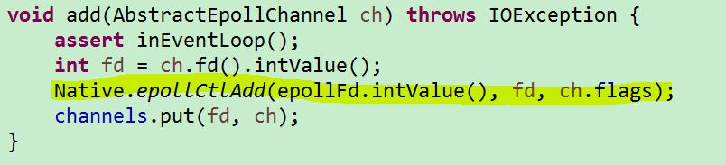
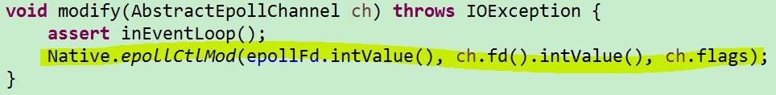
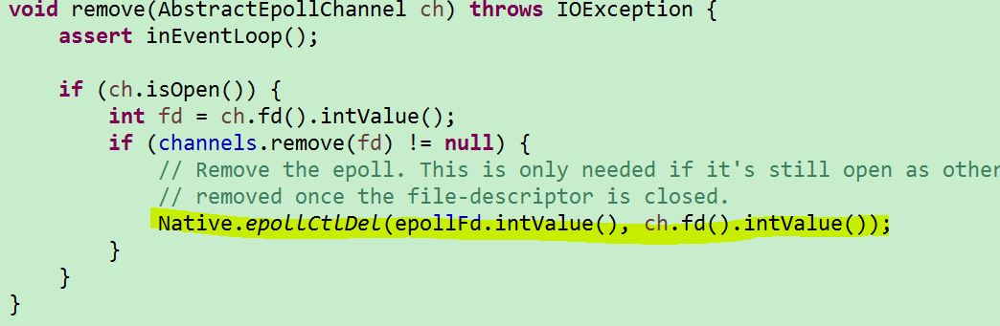
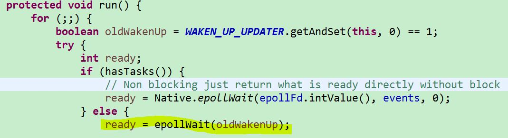
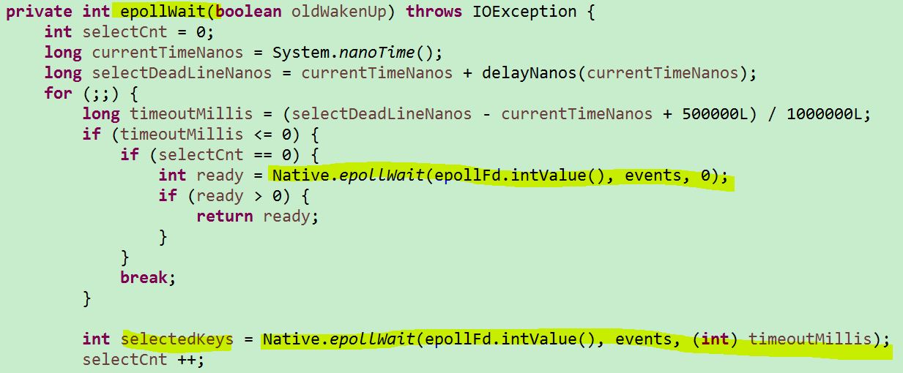
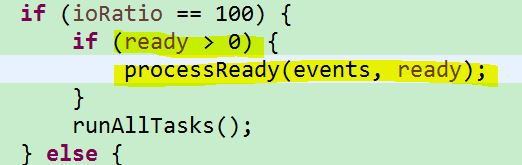
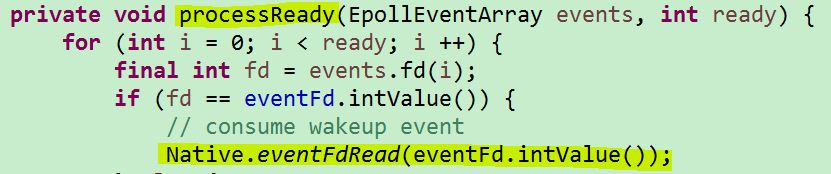

Netty EpollEventLoop
京东JSF中的服务提供者的server可以使用两种EventLoop， 默认为false，所以使用NioEventLoop，如下图所示。
在Netty中, NioEventLoop使用JDK Nio中基于Selector的IO多路复用的方法。在早期的JDK1.4和1.5 update10版本之前，Selector基于select/poll模型实现，是基于IO复用技术的非阻塞IO，不是异步IO。在JDK1.5 update10和linux core2.6以上版本，sun优化了Selctor的实现，底层使用epoll替换了select/poll。 但是在上层的JDK Nio的api中还是沿袭了select（）函数的叫法，而JDK Nio在linux中底层其实用的也是epoll模型。
Netty4.0.17 提供了默认采用ET工作模式的EpollEventLoop。NioEventLoop比EpollEventLoop相对更通用，EpollEventLoop只能在linux上运行，属于Linux native transport，是不能跨操作系统的。EpollEventLoop使用了JNI，调用了linux的epoll API。EpollEventLoop的API也就沿袭了Linux epoll IO多路复用中API的风格和命名方式。相对于基于NIO的transport，JNI transport在特殊平台上增加了特别的特性，会产生更少的内存垃圾，并且也会提高性能。

epoll使用一组函数来完成任务，而不是像select/poll使用单个函数。
1.epoll通过epoll_create创建一个用于epoll轮询的描述符，对应于图1中的 epollFd。
epoll把用户关心的文件描述符上的事件放在内核里的一个事件表中，从而无需像select和poll那样每次调用都要重复传入文件的事件放在内核里的一个事件表中。但epoll需要使用一个额外的文件描述符，来唯一标识内核中的这个事件表；这个文件描述符就是图1中的eventFd。
Native.epollCtlAdd把epollFd和 eventFd做了关联。epoll与select/poll不同，epoll不用每次调用都向内核拷贝事件描述信息，在第一次调用后，事件信息就会与对应的epoll描述符关联起来。

图1 EpollEventLoop初始化epoll
2. epoll通过epoll_ctl添加/修改/删除事件，类似于Observer模式的事件注册。

图2 epollFd中添加事件

图3 epollFd中修改事件

图4 epollFd中删除事件
3. epoll使用“事件”的就绪通知方式，通过在等待的描述符上注册回调函数（epoll_ctl注册fd），当事件发生（事件fd就绪）时，回调函数负责把发生的事件存储在就绪事件链表中，最后写到用户空间， epoll_wait便可以收到通知。 下图是处理就绪事件的流程。

图5 循环阻塞调用epollWait方法，等待就绪的事件

图6 epollwait收到通知后返回epollFd对应的已经就绪的事件id，也就是ready变量

图7 根据事件id，调用就绪处理事件方法

图8 消费已经就绪的事件
总结：epoll基于CQRS的理念，分离了command（epollCtl）和queuy（epollWait）。epoll在性能上也比select/poll高出很多。epoll不需要一直轮询，节省了cpu时间。
在复制问题上，epoll使用mmap减少复制开销。
参考文献：
1.https://github.com/netty/netty/wiki/Native-transports Netty
2.netty-all-4.0.33.Final 源代码 EpollEventLoop
3.http://blog.csdn.net/turkeyzhou/article/details/8504554
4.http://www.cnblogs.com/wiessharling/p/4106295.html
5.http://www.cnblogs.com/Anker/p/3265058.html